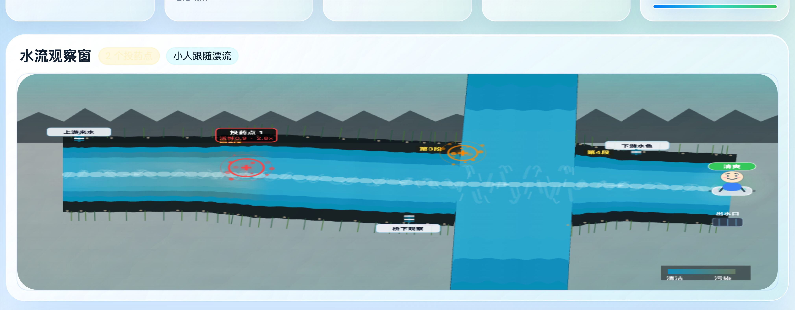
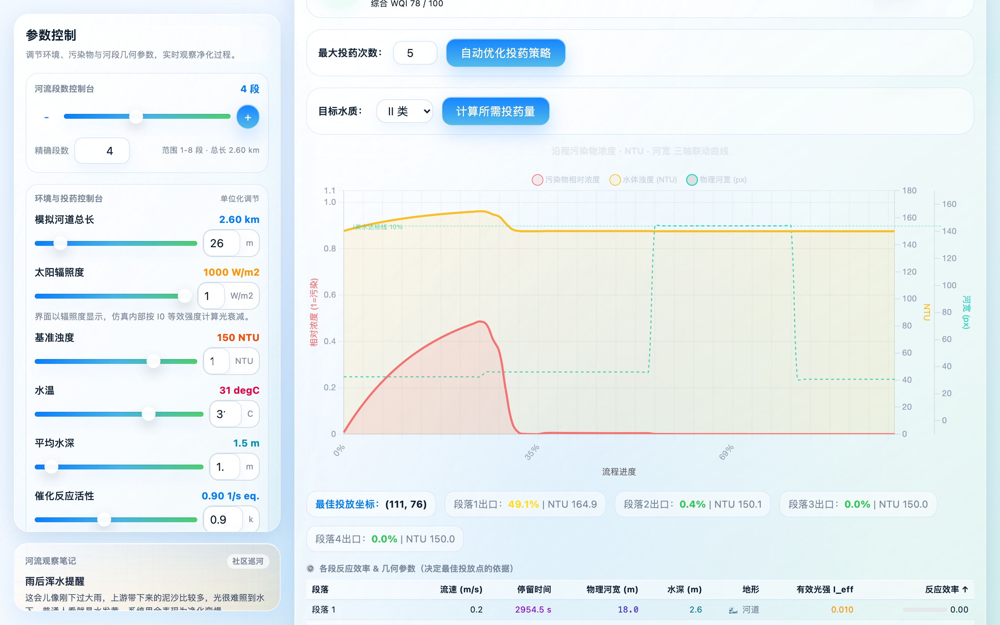
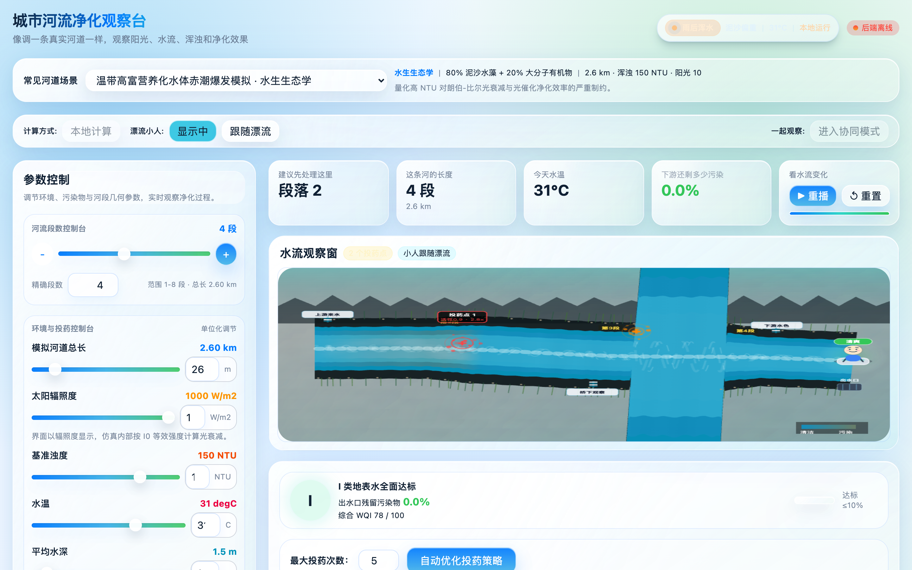

项目介绍
一条会计算的河，
怎样自己变清？
基于微积分切片与指数衰减模型，把光照、浊度、流速、污染物和投药策略映射进一条可交互的数字孪生河流。
它在模拟什么？把不可见的光催化反应，转成可观察、可比较、可优化的沿程变化。
它解决什么？先在虚拟河流里试错，再讨论真实投药位置、剂量和达标风险。
200微元切片，逐段积分
6 类覆盖典型复合污染物
双引擎浏览器实时 + 后端批量推演
输入环境光照、水深、浊度、流速
物理推演切片积分与指数衰减
标准判定GB3838 六级水质
策略输出推荐投药位置和剂量
为什么需要仿真真实河流不能随意试错，数字沙盘先承受风险。
为什么要切片河宽、水深、流速沿程变化，整条河不能只用一个平均值。
为什么能解释每个输出都能追溯到光强、浊度、反应速率和投药点。
输入层光照、温度、河宽、水深、排污位置。
计算层连续性方程、指数中点法、动态 NTU。
展示层河道颜色、曲线、等级、投药建议同步更新。
决策层比较不同方案的达标概率与边际收益。

不是播放动画，而是每一段河流都在重新计算净化过程。

浓度 / 浊度 / 河宽同步遥测

投药点与剂量策略
水质结果一眼读懂
IIIIIIIVV劣V
仿真结果不是只给数字，而是转成可讨论的水质等级和达标状态。
出口浓度
WQI 指数
投药建议
∫ C(x) dx
α = α0 + β·NTU
Q = v · A
Pareto: cost ↔ purity
算法
把复杂模型，
变成算法河流
少讲推导，多看直觉：河流被切片，光线被浊度削弱，污染随反应指数下降，最后由优化算法寻找更省的投药点。
C(t)=C0·e^(-k·t)污染浓度按反应速率逐步衰减
I=I0·e^(-α·d)浊度与水深让光强指数变弱
泥沙水藻：强遮光
重金属：难自然降解
石油烃：油膜折光
微塑料：低浊高稳定
中点重估避免强反应下数值过冲。
浊度闭环污染越高越遮光，形成阈值。
水质映射把残余浓度转为 GB3838 等级。
反应不是线性扣分浓度越低，剩余污染继续下降的速度也会变化。
投药不是越多越好系统关注“多花一份药还能换来多少净化”。
流速-时间映射：t=s/v
连续性方程：Q=vA
浊度反馈：NTU 随浓度变化
合流守恒：按流量加权混合
Lambert-Beer 光束
污染粒子 → 浓度场
Pareto frontier
切片
连续河流拆成可计算小段
光衰减
浑水挡光，催化效率降低
指数净化
浓度随反应不断下降
反馈阈值
变清后更多光进入，净化加速
智能投药
寻找少投药也达标的位置
帕累托直觉：更省药 vs 更干净
红段：污染高，光遮蔽强
黄段：跨过浊度阈值
青段：光进入更深水层
蓝段：出口浓度接近达标
Vibe Coding 不是偷懒，是快速把想法变成可验证系统。
AI 负责加速搭建，人负责提出问题、校验模型、修正审美和判断结果是否可信。
Prompt → 原型
测试 → 纠错
截图 → 审美
论文 → 可信
Vibe Coding
1
一个模糊想法
想把河流净化做成能看、能调、能解释的仿真。
2
AI 搭出原型
先生成界面、组件、算法骨架和数据流。
3
论文测试纠偏
用物理公式、论文逻辑和测试结果不断修正。
4
迭代成系统
形成 v4 仿真引擎、优化算法和可展示界面。
人提出方向什么现象要解释，哪里必须符合学科逻辑。
AI 加速实现快速生成代码、界面、测试与可视化草稿。
再用结果校验跑起来、看截图、读曲线，继续修正。
真实工作流不是一次生成完，而是“提出感觉 → 运行 → 看问题 → 再修”。
质量边界AI 负责速度，人负责可信度、审美和学科判断。
论文校准把模型回到物理机制。
单元测试防止优化和水质分类跑偏。
截图验收检查可视化是否讲得明白。
反复压缩把复杂内容整理成展板语言。
现实应用
从课堂解释，
到治理前的数字沙盘
用更少试错，理解复杂水环境：先在虚拟河流里观察、验证、比较，再讨论现实方案。
课堂上用同一条河讲清“切片、衰减、优化”。
方案前先比较不同投药点的成本和达标效果。
研究中复现实验室难以快速搭建的极端水文场景。
教学
把微积分、化学动力学和优化思想变成可视化实验。
学生先看河水颜色和曲线变化，再回到公式理解模型。治理
辅助判断哪里投药、投多少、最终是否达到水质标准。
把“凭经验试投”变成“先推演，再选择”。科研
在数字孪生沙盘里验证极端水文和多污染物场景。
可快速比较暴雨、高浊度、低温、缓流等复杂边界。少试错先用模型排除明显无效方案。
可解释每条曲线对应一个物理因素。
可复盘保留输入、过程和输出快照。
暴雨高浊度：优先沉降/预处理
晴天缓流：光催化效果上限
工业废水：多点投药权衡
低温低光：反应速率受抑制